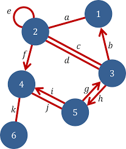
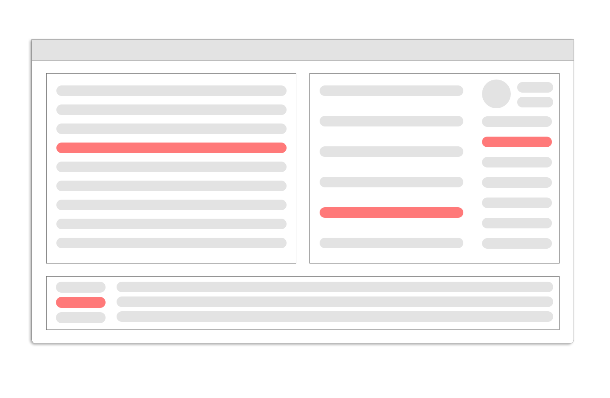

Welcome to Fayetteville.js 🤠
The name's Joey 🥴😻
State Management
What is that?
In a 🥜🐚:
State management is a reactive database for your frontend
State in my front end?
1. A clean way to store static data
Example: A Commerce Site! 📦💰
Buy and sell new and used goodsCommerce site assumptions
- US-only
- New and used items
- Peer to Peer, Business to Peer
Consider US States
A good example of static data
Think of US States and all
of the places you'd need them
of the places you'd need them
- Profile
- Shipping Options
- Searching
- Warehouses
- etc.
Without state management, some options are:
- Network calls to backend
- Copy-and-paste values where needed TODO PICTURE, MAYBE BREAK OUT TO 2 SLIDES
State Management!
Set up a "store" and load it up with your needed info.
Now, all of the places that rely on that data can just feed from that store.
TODO PICTURE
"But what if I just... store it in a JSON file or something?
I dunno. I'm not convinced."

1. Most Data Store integrations are tighter.
2. Reactive Data
How many of you like spas?
How many of you like SPAs?
Passing around data can suck sometimes.
props, event busses, etc.
props

global busses 🚌
Let's say you have an app with multiple components,
and multiple components share some set of data

and multiple components share some set of data
We won't worry about how the data got in all those places, just that it's there.
And it needs to change.
Let's say one of the components can change this data.
What happens to the data everywhere else?
🌎 🚌
Component that mutates:
- When data changes, emit a global event with new data
Other components reliant on data:
- When event received, replace old data with new data
🔧🤠
A bit WET...
The code to receive and react to event is a bit redundant
The code to receive and react to event is a bit redundant
Mitigate with a mixin?
"But what about..."

Only the place where code needs to be mutated would DOM manipulation logic
🤢
What if this data could be changed in multiple places?
Suddenly, both solutions fall short.
Components (plural) that mutate:
- When data changes, emit a global event with new data
- When event received, replace old data with new data
Other components reliant on data:
- When event received, replace old data with new data
When should I use state management?
- Share data between components in an easier way
- If your data needs to "jump" up or down the component tree by more than one hop
- Persist data outside the lifetime of a component
- Clean and powerful way to maintain state
Thanks! 😃
Questions?